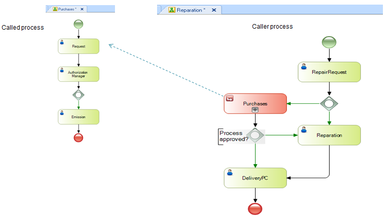

Objects: Business Process DiagramSymbolPurposeA reusable subprocess (called the process) is a process invoked from another process (caller process). A reusable subprocess lets reuse a process defined in another diagram. The relevant data of the called process is independent of the data of the caller process, but there is a mechanism for sending parameters between them. This can be accomplished in two ways:
Example See Also
|
| Backlinks | ||
| Category:BPD Subprocesses | Embedded Subprocess in BPD | Toc:GeneXus BPM Suite |